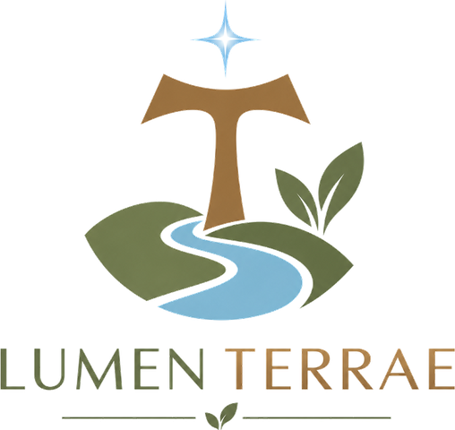

Una invitación a contemplar la creación, transformar el corazón y convertir la fe en una forma concreta de cuidar, servir y evangelizar.
Monterrey, Nuevo León, México.
¿Y si cuidar la creación fuera también una forma de vivir nuestra fe?
Lumen Terrae nace de una convicción sencilla y profunda: la crisis de la casa común también nos llama a una conversión del corazón.
Qué es Lumen Terrae y desde dónde mira.
Lumen Terrae es un apostolado católico por la ecología integral. Ayudamos a personas, familias y comunidades a descubrir la creación como don de Dios y a comprender que el cuidado de la casa común forma parte de una vida cristiana vivida con coherencia.
Integramos espiritualidad, formación, comunidad y acción concreta para acompañar un camino que comienza en la contemplación y conduce hacia la conversión, el cuidado, el servicio y el testimonio.
Por qué Lumen Terrae empieza por dentro y no por fuera.
Hemos aprendido a relacionarnos con muchas cosas desde la lógica de la posesión, el consumo y la utilidad. Consumimos sin siempre preguntarnos qué necesitamos. Utilizamos sin siempre preguntarnos qué hemos recibido. Deseamos sin siempre preguntarnos qué nos hace verdaderamente libres.
Y muchas veces hablamos de cuidar el mundo sin detenernos a preguntarnos qué necesita ser transformado primero en nosotros.
Antes de actuar, contemplamos. Antes de transformar, nos convertimos.
Antes de hablar de cuidado, aprendemos a agradecer. Antes de querer cambiar el mundo, aprendemos a reconocer aquello que Dios nos ha confiado.
Qué es la ecología integral, sin tecnicismos.
La ecología integral nos invita a reconocer que todo está relacionado. La manera en que tratamos la creación está vinculada con nuestra manera de vivir, consumir, trabajar, producir, relacionarnos y servir. Por eso el cuidado de la casa común no puede separarse de la dignidad humana, la familia, la comunidad, la economía, la cultura y el bien común.
No se trata únicamente de cuidar el lugar donde vivimos. Se trata de aprender a vivir de una manera digna de aquello que hemos recibido.
Y no separamos el cuidado de la creación del cuidado de las personas. Por eso ponemos especial atención en quienes experimentan de manera más directa las consecuencias de la degradación ambiental, la pobreza, la vulnerabilidad y la exclusión. No cuidamos la tierra para olvidarnos del hombre: cuidamos la casa común porque en ella vivimos todos.
Alguien que comprende que lo que ha recibido no le pertenece de manera absoluta.
Es quien contempla antes de consumir. Discierne antes de decidir. Agradece antes de exigir. Cuida antes de desechar. Sirve antes de reclamar. Y entiende que sus decisiones pueden convertirse en una forma concreta de amar a Dios y al prójimo.
Siete pasos, y las experiencias que los sostienen.
Todo camino comienza deteniéndose. Una experiencia de silencio, contemplación, formación y conversión para redescubrir la creación como don de Dios y reconocer nuestra responsabilidad como custodios de la casa común.
El retiro no termina cuando sales. Ahí comienza el camino.
La conversión necesita una vida que la sostenga. Por eso el camino continúa después del retiro.
La contemplación nos mueve. La conversión nos transforma. Y la transformación nos envía. Porque la casa común no es una idea: es el lugar donde viven personas concretas.
Dónde puede entrar este camino, y para quién es.
Si quieres vivir tu fe con mayor coherencia en tu vida cotidiana. Si eres una familia que quiere transmitir a sus hijos una relación de gratitud, sobriedad y responsabilidad. Si eres joven y buscas una fe viva y comprometida con el mundo que te toca transformar. Si eres líder y tomas decisiones que afectan a otros. Si eres una comunidad que quiere pasar de la preocupación a la acción.
Dónde están los límites de este apostolado.
Es un apostolado católico. Y por eso, Cristo está en el centro.
Prometemos algo más humilde: ayudarte a detenerte, a mirar, a agradecer, a reconocer, a convertirte, a cuidar, a servir, y a descubrir que una vida transformada puede convertirse en el comienzo de una transformación mucho mayor.
Tres caminos de entrada. Todos llegan al mismo lugar.
Lumen Terrae nace en Monterrey, pero la casa común no tiene fronteras. Nuestro deseo es formar comunidades de custodios capaces de llevar esta espiritualidad a parroquias, colegios, familias, movimientos y comunidades en distintos lugares. Una persona. Una familia. Una comunidad. Una generación. Una casa común que aprendemos nuevamente a custodiar.
Lumen Terrae · Formamos custodios de la casa común.
Volver al portafolio